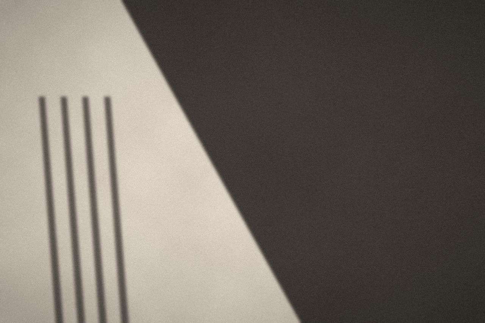

Как выбрать локацию, чтобы она стала частью истории
Локация — это не фон, а часть истории: свет, время суток и характер пространства.
Capturing what remains.
Моменты, места, фрагменты. 24 кадров в 5 коллекциях — от ночного города до чистой геометрии и шума.
«Не то, что было перед объективом, а то, что от этого осталось.»
Пять серий. Одна логика.
Каждая коллекция — отдельный способ смотреть: на свет после заката, на форму без функции, на тишину, на воду и на сам шум изображения.
All collectionsЛокация — это не фон, а часть истории: свет, время суток и характер пространства.
